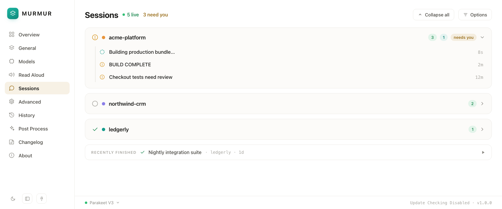
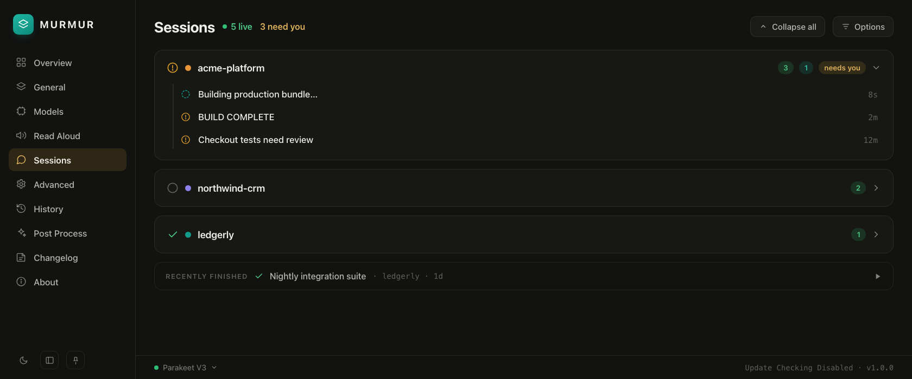

Read-aloud neural voices
Hear your agent think. Natural Edge TTS plus fully offline Kokoro voices — clear, fast, free.
Edge TTS + KokoroThe voice layer for Claude Code. Give your agents a voice, dictate into any app, and watch every session as it runs.
Local-first, private, and free · by Stratos House

What's inside
Neural read-aloud, push-to-talk dictation, and a live window into every Claude Code session. No cloud, no telemetry.
Hear your agent think. Natural Edge TTS plus fully offline Kokoro voices — clear, fast, free.
Edge TTS + KokoroOne global hotkey turns speech into text anywhere — editor, terminal, browser, chat. No window switching.
Global hotkeyWatch every Claude Code session as it runs. See what your agents are doing, in real time, in one place.
LiveAn interface that's easy on the eyes in any light. Considered typography, generous spacing, no clutter.
Native themesNothing leaves your machine. Transcription and synthesis run entirely offline — your words stay yours.
On-deviceDesigned around the way agents work — sessions, voice, and MCP-ready hooks that slot into your flow.
MCP-readyLight & dark
The same considered interface, whichever way you work. Switch themes from the rail or settings — Murmur follows.

How it works
Murmur sits quietly in your menu bar and wires voice into everything you already do with Claude Code.
Download the notarized macOS app, allow microphone and accessibility, and you're ready in under a minute.
Hold your hotkey to dictate into any app, and let read-aloud voice every reply your agent sends back.
Open the observatory to follow every Claude Code session live — all on your own machine.
Free & open source
The voice layer for Claude Code — local-first, private, and free. Built for Apple Silicon.